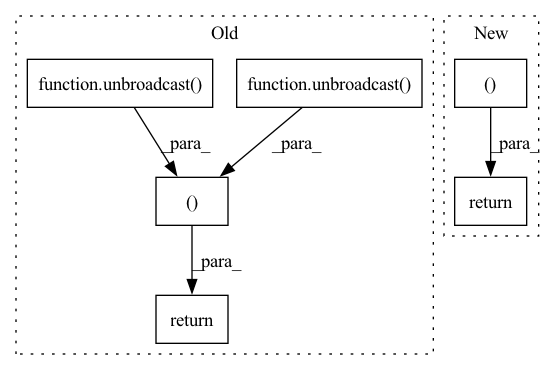

Pattern ID :12500

Before Change
grad_a = grad_output.data * b.data
grad_b = grad_output.data * a.data
grad_a = tensor.Tensor(unbroadcast(grad_a, a.shape))
grad_b = tensor.Tensor(unbroadcast(grad_b, b.shape))
return grad_a, grad_b
class ReLU(Function):
@staticmethod
After Change
else:
grad_a, grad_b = ops_gpu.mul_backward(ctx.cl_ctx, ctx.cl_queue, grad_output.data, a.data, b.data)
return tensor.Tensor(grad_a, device=a.device), tensor.Tensor(grad_b, device=b.device)
class ReLU(Function):
@staticmethod
In pattern: SUPERPATTERN
Frequency: 4
Non-data size: 6
Instances
Fragment ID: 42396806
Project Name: pabannier/nanograd
Commit Name: a760852f227cf84e2f4d6dc6008b0a38c4f10be5
Time: 2021-01-17
Author: pierreantoine.bannier@gmail.com
File Name: nanograd/nn/functional.py
M Class Name: Mul
N Class Name: Mul
M Method Name: backward(2)
N Method Name: backward(2)
M Parent Class: Function
N Parent Class: Function
M File Name: nanograd/nn/functional.py
N File Name: nanograd/nn/functional.py
M Start Line: 492
M End Line: 498
N Start Line: 492
N End Line: 497
'>
Before Change
def backward(ctx, grad_output):
shape_x, shape_y = ctx.saved_tensors
grad_x, grad_y = grad_output, unary_op("-a", grad_output, Buffer(grad_output.shape))
return unbroadcast(grad_x, shape_x), unbroadcast(grad_y, shape_y)
class Mul(Function):
def forward(ctx, x, y):
ctx.save_for_backward(x, y)
After Change
def backward(ctx, grad_output):
shape_x, shape_y = ctx.saved_tensors
return unbroadcast(grad_output, shape_x) if ctx.needs_input_grad[0] else None, \
unbroadcast(unary_op("-a", grad_output, Buffer(grad_output.shape)), shape_y) if ctx.needs_input_grad[1] else None
class Mul(Function):
def forward(ctx, x, y):
'>
Fragment ID: 42396807
Project Name: geohot/tinygrad
Commit Name: f177cd550f44050efeea4283e3216471c578428a
Time: 2022-06-06
Author: geohot@gmail.com
File Name: tinygrad/ops/ops_gpu.py
M Class Name: Sub
N Class Name: Sub
M Method Name: backward(2)
N Method Name: backward(2)
M Parent Class: Function
N Parent Class: Function
M File Name: tinygrad/ops/ops_gpu.py
N File Name: tinygrad/ops/ops_gpu.py
M Start Line: 83
M End Line: 84
N Start Line: 84
N End Line: 85
'>
Before Change
grad_a = np.ones(a.shape) * grad_output.data
grad_b = np.ones(b.shape) * grad_output.data
grad_a = tensor.Tensor(unbroadcast(grad_a, a.shape))
grad_b = tensor.Tensor(unbroadcast(grad_b, b.shape))
return grad_a, grad_b
class Sum(Function):
@staticmethod
After Change
grad_a, grad_b = ops_gpu.add_backward(ctx.cl_ctx, ctx.cl_queue, grad_output.data,
a.shape, b.shape)
return tensor.Tensor(grad_a), tensor.Tensor(grad_b)
class Sum(Function):
@staticmethod
'>
Fragment ID: 42396804
Project Name: pabannier/nanograd
Commit Name: cfa262ec2ccafd4370bf2dbe7e19f217ea54ab15
Time: 2021-01-17
Author: pierreantoine.bannier@gmail.com
File Name: nanograd/nn/functional.py
M Class Name: Add
N Class Name: Add
M Method Name: backward(2)
N Method Name: backward(2)
M Parent Class: Function
N Parent Class: Function
M File Name: nanograd/nn/functional.py
N File Name: nanograd/nn/functional.py
M Start Line: 313
M End Line: 319
N Start Line: 321
N End Line: 327
'>
Before Change
def backward(ctx, grad_output):
grad_x, grad_y = grad_output, grad_output
shape_x, shape_y = ctx.saved_tensors
return unbroadcast(grad_x, shape_x), unbroadcast(grad_y, shape_y)
class Sub(Function):
def forward(ctx, x, y):
ctx.save_for_backward(x.shape, y.shape)
After Change
def backward(ctx, grad_output):
shape_x, shape_y = ctx.saved_tensors
return unbroadcast(grad_output, shape_x), unbroadcast(grad_output, shape_y)
class Sub(Function):
def forward(ctx, x, y):
ctx.save_for_backward(x.shape, y.shape)
'>
Fragment ID: 42396805
Project Name: geohot/tinygrad
Commit Name: 85e130a0c74ffb9cc8e317a963cac40e5bbf7368
Time: 2022-06-05
Author: geohot@gmail.com
File Name: tinygrad/ops/ops_gpu.py
M Class Name: Add
N Class Name: Add
M Method Name: backward(2)
N Method Name: backward(2)
M Parent Class: Function
N Parent Class: Function
M File Name: tinygrad/ops/ops_gpu.py
N File Name: tinygrad/ops/ops_gpu.py
M Start Line: 70
M End Line: 72
N Start Line: 71
N End Line: 71